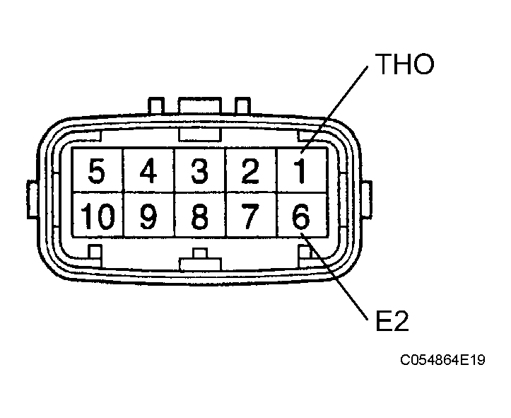

Transmission Wire: Inspection
WARNING: This page is about a different variant/trim than selected.
- INSPECT TRANSMISSION WIRE (ATF TEMPERATURE SENSOR)
- Disconnect the E1 wire connector.
- Measure the resistance of the transmission wire.
Standard resistance
TESTER CONNECTION SPECIFIED CONDITIONTester Connection Specified Condition 1 (THO) - 6 (E2) 79 to 156 kΩ 1 (THO) - Body ground 10 kΩ or higher 6 (E2) - Body ground 10 kΩ or higher 
Courtesy of © TOYOTA, LICENSE AGREEMENT TMS1002HINT:
If the resistance is not as specified for either of the ATF temperatures shown in the table below, the driveability of the vehicle may decrease.
Standard resistance
SPECIFIED CONDITIONATF Temperature Specified Condition 10°C (68°F) 6.4 kΩ 110°C (230°F) 0.2 kΩ